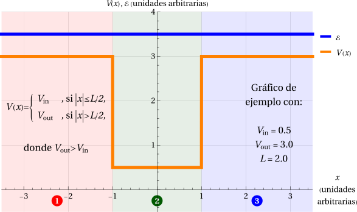

Caso (a): \(\mathcal{E}>V_\text{out}>V_\text{in}\)
En el caso (a) la energía supera al potencial en todo punto: \(\mathcal{E}>V_\text{out}>V_\text{in}\).

Como \(k_\text{in}\) y \(k_\text{out}\) son ambos reales (con \(k_\text{in} > k_\text{out}>0\)), las soluciones son oscilatorias en las tres regiones.
\[ \begin{aligned} \psi_1(x)&=A_1\,e^{\,i k_\text{out}x}+B_1\,e^{-i k_\text{out}x} &&(x<-L/2),\\ \psi_2(x)&=A_2\,e^{\,i k_\text{in}x}+B_2\,e^{-i k_\text{in}x} &&(|x|\le L/2),\\ \psi_3(x)&=A_3\,e^{\,i k_\text{out}x}+B_3\,e^{-i k_\text{out}x} &&(x>L/2). \end{aligned} \]De este modo, no se observa confinamiento en este régimen. Debido a ello, podemos suponer que la partícula viene desde lejos como, por ejemplo, desde \(x=-\infty\). Entonces:
- \(A_1\) será el coeficiente de referencia ya que indica la amplitud de la onda incidente.
- \(B_1\) es la amplitud de una onda reflejada de vuelta en la Región 1. Se usará para determinar un coeficiente de reflexión efectivo.
- \(A_2\) y \(B_2\) serán amplitudes de ondas moviéndose hacia la derecha y hacia la izquierda, respectivamente, dentro de la Región 2.
- \(A_3\) es la amplitud de la fracción de la onda que es transmitida hacia la Región 3 y que se propaga hacia \(x=+\infty\). Se usará para calcular un coeficiente de transmisión efectivo.
- \(B_3\) sería la amplitud de una onda en la Región 3 que se mueve hacia la izquierda. Como no hay nada en lo que se pueda reflejar la onda, esperaríamos que \(B_3=0\). Con ello, tenemos una incógnita menos.
Nótese que \(B_1\) tendrá contribuciones de "reflexión en 1|2", "transmisión en 1|2 + reflexión en 2|3 + transmisión en 2|1", etc. Solo por simplicidad de lenguaje, diremos que es una reflexión efectiva en 1|2.
Sistema lineal
Recordemos que \( A_1\) se usará como coeficiente de referencia, de modo que podemos expresar \(B_1, A_2, B_2\) y \(A_3\) en función de aquel. Se obtiene un sistema no homogéneo de 4 ecuaciones que puede representarse matricialmente como \(\mathbf{M}\cdot\vec{v}=\vec{b}\), donde
- \(\mathbf{M}\) es la matriz de coeficientes.
- \(\vec{v}\) es el vector que contiene a las incógnitas.
- \(\vec{b}\) es el término inhomogéneo del sistema y contiene a \(A_1\).
Siendo un sistema inhomogéneo, al despejar los coeficientes se obtendrá una solución no trivial (no serán solo ceros). Además, a diferencia de un sistema homogéneo, no se necesita imponer que el determinante se anule, así que no aparece ninguna discretización de la energía: la solución existe para cualquier \(\mathcal{E}>V_\text{out}\) y está dada por
\[ \begin{align} B_1 &= \frac{ \left(e^{2 i k_{\text{in}}L} - 1 \right) \left(k_{\text{in}}^2 - k_{\text{out}}^2\right) e^{-i k_{\text{out}} L } }{ \left(k_{\text{in}}+k_{\text{out}}\right)^2 - e^{2 i k_{\text{in}} L} \left(k_{\text{in}}-k_{\text{out}}\right)^2 } A_1 , & %%%%%%%%%%%%%%%%%%%%%%%%%%%% A_2 &= \frac{ 2 k_{\text{out}} \left(k_{\text{in}}+k_{\text{out}}\right) e^{i \left(k_{\text{in}}-k_{\text{out}}\right)L/2} }{ \left(k_{\text{in}}+k_{\text{out}}\right)^2 - e^{2 i k_{\text{in}} L} \left(k_{\text{in}}-k_{\text{out}}\right)^2 } A_1 , \\ %%%%%%%%%%%%%%%%%%%%%%%%%%%% B_2 &= \frac{ 2 k_{\text{out}} \left(k_{\text{in}}-k_{\text{out}}\right) e^{i \left(3 k_{\text{in}}-k_{\text{out}}\right)L/2} }{ \left(k_{\text{in}}+k_{\text{out}}\right)^2 - e^{2 i k_{\text{in}} L} \left(k_{\text{in}}-k_{\text{out}}\right)^2 } A_1 , & %%%%%%%%%%%%%%%%%%%%%%%%%%%% A_3 &= \frac{ 4 k_{\text{in}} k_{\text{out}} e^{i \left(k_{\text{in}}-k_{\text{out}}\right)L } }{ \left(k_{\text{in}}+k_{\text{out}}\right)^2 - e^{2 i k_{\text{in}} L} \left(k_{\text{in}}-k_{\text{out}}\right)^2 } A_1 . \end{align} \]Amplitudes de reflexión y transmisión
Si vemos el pozo como una “caja negra”, nuestro mayor interés estará en analizar qué es lo que emerge de él cuando enviamos algo. Así suelen tratarse los problemas de scattering. En este contexto, se envió una onda desde \(x=-\infty\) hacia el pozo. Ahí puede ocurrir que una parte de esa onda se devuelva hacia la izquierda (reflexión) y que otra parte emerja hacia la derecha (transmisión). Las amplitudes de reflexión \(r\) y transmisión \(t\) contienen información de con cuánta probabilidad ocurrirá cada opción y si la onda gana alguna fase en ellas. Las definiremos como
Las probabilidades de reflexión y transmisión se calculan, como siempre en mecánica cuántica, con el módulo al cuadrado:
- En este cálculo se mostraron estos coeficientes bajo la suposición de que la onda incidente viene desde la izquierda. Si se hubiera supuesto que la onda viene desde la derecha, se debe calcular \(r\) y \(t\) de acuerdo con ese convenio.
- Suponga que \(r_{\pm}\) y \(t_{\pm}\) fuesen las amplitudes de reflexión y transmisión para una onda que va desde \(\mp\infty\) hacia \(\pm\infty\).
- El signo en el subíndice indica la dirección de propagación de la onda incidente, no su procedencia.
- Los \(r\) y \(t\) de más arriba serían como estos \(r_{+}\) y \(t_{+}\), respectivamente.
- Generalmente ocurrirá que \(r_{+}\neq r_{-}\) y \(t_{+}\neq t_{-}\). No obstante, sí ocurre igualdad en el caso de potenciales simétricos como el que estamos viendo aquí.
R y T en términos de los parámetros reducidos
Reemplazando en \(r\) y \(t\) los parámetros reducidos \(\eta\) y \(\Lambda\) (definidos en la teoría general) se obtiene
Se ve directamente que \(R+T=1\). Podemos destacar:
- Resonancias: cuando \(\sin(2\pi\Lambda)=0\), tendremos que \(T=1\) y \(R=0\). Es decir, la onda pasa como si el pozo no estuviera.
Ello ocurre cuando \(\Lambda=n/2\), con \(n=1,2,\dots\) o, equivalentemente, cuando \(L\) contiene un número entero de medias longitudes de onda de de Broglie. - Mínimo de transmisión: ocurre cuando \(\cos(4\pi\Lambda)=-1\), es decir \(\Lambda=(2n+1)/4\), y vale \[ T_\text{mín}=\frac{4\eta(\eta-1)}{(2\eta-1)^2}.\] Es el fenómeno contrario a la resonancia y ocurre cuando el ancho del pozo es igual a un número impar de cuartos de longitudes de onda.
- Límites:
- Si \(\eta\to 1\) (energía apenas sobre \(V_\text{out}\)), entonces \(k_\text{out}\to0\) y \(T_\text{mín}\to0\): casi todo se refleja.
- Si \(\eta\to\infty\), \(T\to1\): la partícula casi no nota el pozo.
Cómo usar las simulaciones
- En el primer gráfico, cambie \(\eta\) y compruebe que los máximos de \(T\) quedan siempre en \(\Lambda=n/2\), y que el mínimo sube al aumentar \(\eta\).
- En el segundo gráfico, ajuste \(L\), \(\Delta V\) y \(\eta\). Cuando \(\Lambda\) es múltiplo de \(1/2\), la onda reflejada desaparece y solo quedan las ondas del interior y la transmitida.
- Para un electrón, \(k=\sqrt{2mc^2\,E}/(\hbar c)\) con \(mc^2=0{,}511\ \text{MeV}\) y \(\hbar c=1973{,}27\ \text{eV·Å}\). Las simulaciones usan longitudes en Å y energías en eV.